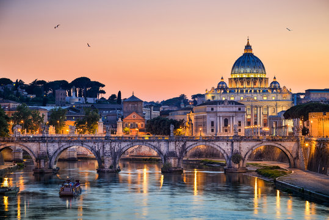

E' un comune italiano, capitale della Repubblica Italiana, nonche' capoluogo dell'ononima cità metropolitana e della regione Lazio.
L'importanza storica, monumentale, artistica, culturale e religiosa della città la rende una delle principali mete turistiche nel mondo, e anche nel 2019 mantiene la seconda posizione in Europa dopo Parigi.
Per consultare il sito turiustico ufficiale della città clicca sull'immagine seguente.
I principali siti turistici di Roma sono: